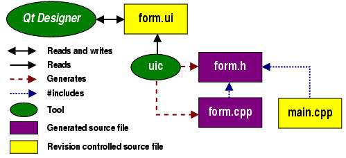
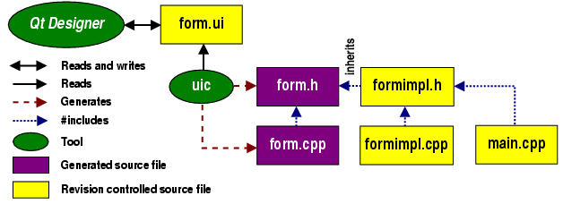
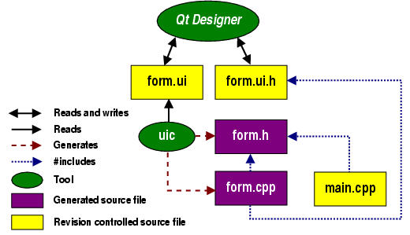

| Home | All Classes | Main Classes | Annotated | Grouped Classes | Functions |
[Prev: Creating Dialogs] [Home] [Next: Subclassing and Dynamic Dialogs]
In Qt 2.x, Qt Designer was a visual form designer for editing files in the .ui file format. Qt Designer's primary goal was to turn the most tedious part of GUI programming -- dialog design -- into a pleasant experience. From an architectural point of view, Qt Designer in 2.x is a fairly simple program. It reads and writes .ui files. Each .ui file contains an XML description of a single dialog form. A second utility -- the user interface compiler uic -- is used during the build process of an application to generate C++ code from those XML descriptions.
For Qt 3.0 our ambitions for Qt Designer have grown beyond single dialog editing. In addition to many new design features like the ability to creating main windows and actions, the new version introduces:
project management for the user interface part of your application;
code in forms Qt Designer provides a code editor so that you can code your slots directly; the code is stored in .ui.h files and eliminates the need for sub-classing (although you can still subclass if you prefer);
dynamic form loading allows you to load .ui files at runtime which provides great scope for design customization separate from the underlying code.
The purpose of this chapter is to explain the motivation for making these changes, describe the new concepts involved and show how these features work internally.
Qt Designer is and remains a visual design tool: it is not a complete integrated development environment. Our policy is to make GUI development as easy and powerful as possible without locking our users into any particular tool: Qt Designer makes it easy to create and modify GUI designs, but you can still achieve the same results directly in code using a plain text editor if you prefer.
To make working more convenient, Qt Designer now includes a C++ editor (as a plugin). If you want to create or edit a form, use Qt Designer. If you want edit code for that form, you can use the C++ editor in Qt Designer as well. This built-in editor has certain benefits stemming from its tight integration with the visual form design process that we will explain later. However, if you prefer using the editor you're used to, vim, emacs, notepad, Microsoft Visual Studio, etc. you can still do so.
Reading and writing single, non-connected .ui files is conceptually simple and worked fairly well in Qt 2.x. However, it lacked certain features that made us introduce project management for the GUI part of an application in Qt Designer. The main benefits of project management are:
Grouping forms that belong together.
Sharing images between different forms.
Sharing database information between different forms.
The following sections explain these benefits in more detail, and why project management is required to achieve them.
Grouping forms means that Qt Designer maintains a list of the .ui files that belong to the same project. This makes it easy to switch between forms with a single mouse click.
In Qt 2.x's Qt Designer each form included the images it required and no images were shared. This led to duplication when several forms needed to use the same images. Furthermore the images were stored in the XML .ui files which made them large.
As a workaround, we introduced a pixmap-loading function that you could define in Qt Designer. It then was your responsibility to provide the implementation of this function in your application code. The big disadvantage of this approach was that you couldn't see the images during the design process in Qt Designer. This not only makes designing a form less visually interesting, but also has a noticeable impact on geometry management.
In the Qt 3.0 version of Qt Designer we've introduced the concept of a project image collection. If you use a project you can add images to the project's image collection, and these images can be shared and used by any of the forms you include in the project. The images are stored as PNGs (portable network graphics) in a subdirectory, images/, inside the project's directory. Whenever you modify the image collection, Qt Designer creates a source file which contains both the image data in binary format and a function to instantiate the images. The images are accessible by all forms in the project and the data is shared.
A further benefit of using an image collection is that the images are added to the default QMimeSourceFactory. This way they are accessible from rich-text labels, What's This? context help and even tooltips through standard HTML image tags. The source argument of the image tag is simply the image's name in the image collection. This also works during the design process in Qt Designer.
Qt 3.0 introduces a brand new database module, the Qt SQL module. Qt Designer is fully integrated with the SQL module and can show live data from the databases that you connect to.
When you've opened or created a project you can set up its database connections using the Edit Database Connections dialog (invoked by the Project|Database Connections menu option). The connections you make are stored in a .db file. When you reload a project you can reconnect by going to the Edit Database Connections dialog, clicking a connection in the list and clicking the Connect button.
In most non-trivial database applications you will want to access the database from more than one form. This is why the .db file is part of a project, not just part of a single form.
Qt Designer needs to store information on projects, for example, the list of forms, the image collection and information about available databases and how to access them. The majority of Qt users already use a project file format to create multiplatform makefiles: tmake (and with Qt 3.0 qmake) project .pro files. These files already contain the list of forms, .ui files, used in the project for uic.
We've extended the sections in the .pro file to include the extra information that Qt Designer needs to manage projects. For example, when you add a form to your project in Qt Designer, it is automatically added to the FORMS section of the project file, and thus qmake will generate the required build rules without any further work. Similarly, the images are added to the IMAGES section and thus gets automatically compiled into your executable.
We don't force you to use qmake; if you prefer another build system, for example automake/autoconf or jam, you can still continue to use it. Look upon the .pro file as a file that describes the GUI part of your application. All you need to do -- as previously -- is add the .ui files and the images collection to your own Makefiles.
First let us look at a small figure that shows the relationship between .ui files, generated code and application code:

Qt Designer reads and writes .ui files, e.g. form.ui. The user interface compiler, uic, creates both a header file, e.g. form.h, and an implementation file, e.g. form.cpp, from the .ui file. The application code in main.cpp #includes form.h. Typically main.cpp is used to instantiate the QApplication object and start off the event loop.
While this approach is simple, it isn't sufficient for more complex dialogs. Complex dialogs tend to have quite a lot of logic attached to the form's widgets, more logic than can usually be expressed with predefined signals and slots. One way of handling this extra logic is to write a controller class in the application code that adds functionality to the form. This is possible because uic generated classes expose a form's controls and their signals to the public space. The big disadvantage of this method is that it's not exactly Qt-style. If you were not using Qt Designer, you would almost always add the logic to the form itself, where it belongs.
This is why the capability of adding custom slots and member variables to a form was added to Qt Designer early on. The big additional benefit with this approach is that you can use Qt Designer to connect signals to those custom slots, in the same elegant graphical way that is used to connect signals to predefined slots. The uic then adds an empty stub for each custom slot to the generated form.cpp implementation file.
The big question now is how to add custom implementation code to those custom slots. Adding code to the generated form.cpp is not an option, as this file gets recreated by the uic whenever the form changes -- and we don't want a combination of generated and handwritten code. There are two possible solutions, which we'll cover next.
A very clean way to implement custom slots for generated forms is via C++ inheritance as shown in the next figure:

Here the user wrote an additional class FormImpl, which is split into the header file formimpl.h and the implementation file formimpl.cpp. The header file includes the uic generated form.h and reimplements all the custom slots. This is possible because uic generated custom slots are virtual. In addition to implementing custom slots, this approach gives the user a way to do extra initialization work in the constructor of the subclass, and extra cleanups in the destructor.
Because of these benefits and its flexibility, this approach became the primary way of using Qt Designer in Qt 2.x.
Note: To keep the namespace clean, most users did not follow the Form and FormImpl naming scheme shown in the figure, but instead named their Qt Designer forms FormBase and their subclasses Form. This made a lot of sense, because they always subclassed and were using those subclasses in application code.
Despite its flexibility and cleanness, the subclassing approach has some disadvantages:
Subclassing is not natural and easy for everybody. Newcomers to object-oriented techniques may feel uneasy about being forced to subclass for such a simple and natural thing like the implementation of a custom slot.
Inheriting generated classes is an additional possible source of programming mistakes, especially if the number of reimplemented functions is high and the signatures change often during the design process. To make the development process smoother, uic generates empty stubs for custom slots rather than pure virtual functions. While this approach keeps the code compiling and running, programmers can find themselves in a situation where they miss a runtime warning message and lose time before they find a small spelling error in their subclass.
In larger projects with hundreds of forms, the additional subclasses can make a noticeable difference in terms of compilation speed and code size.
There may be more disadvantages, but these were reason enough for us to investigate alternative solutions. For Qt 3.0, we came up with a new concept, the ui.h extension.
This is how it works:

In addition to the .ui file, form.ui, Qt Designer reads and writes another associated file form.ui.h. This .ui.h file is an ordinary C++ source file that contains implementations of custom slots. The file gets included from the generated form implementation file form.cpp and thus can be totally ignored by other user code. The reason we use a .h extension for the .ui.h file even though it contains C++ code is because it is always included, and because it is easier to integrate into the build process with a .h extension.
The form.ui.h file has a special position among all other files. It is a shared source file that gets written and read by both the user and Qt Designer. As such it is an ordinary revision controlled source file and not generated by uic. Qt Designer's responsibility is to keep the file in sync with the custom slot definitions of the associated form:
Whenever the users adds a new slots to the form, Qt Designer adds a stub to the .ui.h file.
Whenever the user changes a custom slot's signature, Qt Designer updates the corresponding implementation.
Whenever the user removes a custom slot, Qt Designer removes it from the .ui.h file.
This way integrity is guaranteed, there is no more need for subclassing and no more danger of forgotten or misspelled slots in subclasses.
You can edit .ui.h files either directly in Qt Designer with the built-in C++ editor plugin, or with whatever editor you prefer. You should only put slot implementations in the .ui.h file and you should always add, delete or rename slots within Qt Designer. You can edit the implementations of the slots either within Qt Designer or using your own editor; if you use your own editor Qt Designer will keep your changes.
The ui.h extension approach has one disadvantage compared to subclassing. The ui.h file only contains custom slot implementations, but the objects are still entirely constructed and destructed inside the generated form.cpp code. This leaves the user without the possibility of doing further form initializations or cleanups that you normally would do within the constructor and destructor functions of a C++ class.
To work around this limitation, we created the init/destroy convention. If you add a slot Form::init() to your form, this slot will be called automatically at the end of the generated form constructor. Similarly, if you add a slot Form::destroy() to your form, the slot will automatically be invoked by the destructor before any form controls get deleted. (These slots should return void.) If you prefer to use your own editor you must still create these functions in Qt Designer; once created you can then write your implementation code either using Qt Designer's C++ editor plugin or using your own editor.
We extracted the part of Qt Designer that is responsible for loading and previewing a form into a library of its own, libqui. A new class QWidgetFactory makes it possible to load .ui files at runtime and instantiate forms from them.
This dynamic approach keeps the GUI design and the code separate and is useful in environments where the GUI may have to change more often than the underlying application logic. Ultimately, you can provide users of your application the ability to modify the graphical user interface without the need for a complete C++ development environment.
Since the .ui file is not compiled it cannot include any C++ code, (e.g. custom slot implementations). We provide a way of adding those implementations via a controlling QObject subclass that you pass as receiver to the widget factory.
This concept and its usage is explained in detail in the Subclassing and Dynamic Dialogs chapter.
[Prev: Creating Dialogs] [Home] [Next: Subclassing and Dynamic Dialogs]
| Copyright © 2007 Trolltech | Trademarks | Qt 3.3.8
|